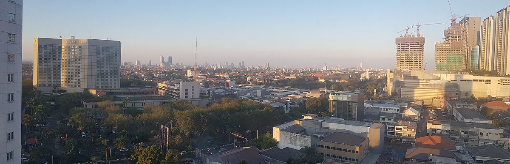
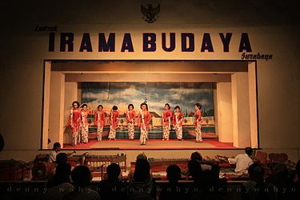
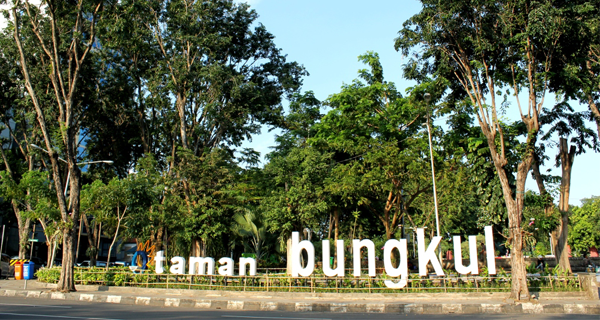

Kata Surabaya (bahasa Jawa Kuno: Śūrabhaya) sering diartikan secara filosofis sebagai lambang perjuangan antara darat dan air. Selain itu, dari kata Surabaya juga muncul mitos pertempuran antara ikan sura / suro (ikan hiu) dan baya / boyo (buaya), yang menimbulkan dugaan bahwa terbentuknya nama "Surabaya" muncul setelah terjadinya pertempuran tersebut.
Bukti sejarah menunjukkan bahwa Surabaya sudah ada jauh sebelum zaman kolonial, seperti yang tercantum dalam prasasti Trowulan I, berangka 1358 M. Dalam prasasti tersebut terungkap bahwa Surabaya (Churabhaya) masih berupa desa di tepi sungai Brantas dan juga sebagai salah satu tempat penyeberangan penting sepanjang daerah aliran sungai Brantas. Surabaya juga tercantum dalam pujasastra Kakawin Nagarakretagama yang ditulis oleh Empu Prapañca yang bercerita tentang perjalanan pesiar Raja Hayam Wuruk pada tahun 1365 M dalam pupuh XVII (bait ke-5, baris terakhir).
Walaupun bukti tertulis tertua mencantumkan nama Surabaya berangka tahun 1358 M (Prasasti Trowulan) dan 1365 M (Nagarakretagama), para ahli menduga bahwa wilayah Surabaya sudah ada sebelum tahun-tahun tersebut. Menurut pendapat budayawan Surabaya berkebangsaan Jerman Von Faber, wilayah Surabaya didirikan tahun 1275 M oleh Raja Kertanegara sebagai tempat permukiman baru bagi para prajuritnya yang berhasil menumpas pemberontakan Kemuruhan pada tahun 1270 M. Pendapat yang lainnya mengatakan bahwa Surabaya dahulu merupakan sebuah daerah yang bernama Ujung Galuh.
Versi lain menyebutkan, Surabaya berasal dari cerita tentang perkelahian hidup-mati antara Adipati Jayengrono dan Sawunggaling. Konon, setelah mengalahkan pasukan Kekaisaran Mongol utusan Kubilai Khan atau yang dikenal dengan pasukan Tartar, Raden Wijaya mendirikan sebuah keraton di daerah Ujung Galuh dan menempatkan Adipati Jayengrono untuk memimpin daerah itu. Lama-lama karena menguasai ilmu buaya, Jayengrono semakin kuat dan mandiri sehingga mengancam kedaulatan Kerajaan Majapahit. Untuk menaklukkan Jayengrono, maka diutuslah Sawunggaling yang menguasai ilmu sura.
Adu kesaktian dilakukan di pinggir Kali Mas, di wilayah Peneleh. Perkelahian itu berlangsung selama tujuh hari tujuh malam dan berakhir dengan tragis, karena keduanya meninggal setelah kehilangan tenaga. Sehingga Kemudian Nama Śūrabhaya sendiri dikukuhkan sebagai nama resmi pada abad ke-14 oleh penguasa Ujung Galuh, Arya Lêmbu Sora.
Perekonomian

Pemandangan Kota Surabaya
Letak Kota Surabaya yang sangat strategis berada hampir di tengah wilayah Indonesia dan tepat di selatan Asia menjadikannya sebagai salah satu hub penting bagi kegiatan perdagangan di Asia Tenggara. Sebagai kota metropolitan, Surabaya menjadi pusat kegiatan ekonomi, keuangan, dan bisnis di daerah Jawa Timur dan sekitarnya. Sebagai salah satu pusat perdagangan, Surabaya tidak hanya menjadi pusat perdagangan bagi wilayah Jawa Timur, namun juga memfasilitasi wilayah-wilayah di Jawa Tengah, Kalimantan, dan kawasan Indonesia Timur. Surabaya dan kawasan sekitarnya merupakan kawasan yang paling pesat pembangunan ekonominya di Jawa Timur dan salah satu yang paling maju di Indonesia.
Letak Kota Surabaya yang sangat strategis berada hampir di tengah wilayah Indonesia dan tepat di selatan Asia menjadikannya sebagai salah satu hub penting bagi kegiatan perdagangan di Asia Tenggara. Sebagai kota metropolitan, Surabaya menjadi pusat kegiatan ekonomi, keuangan, dan bisnis di daerah Jawa Timur dan sekitarnya. Sebagai salah satu pusat perdagangan, Surabaya tidak hanya menjadi pusat perdagangan bagi wilayah Jawa Timur, namun juga memfasilitasi wilayah-wilayah di Jawa Tengah, Kalimantan, dan kawasan Indonesia Timur. Surabaya dan kawasan sekitarnya merupakan kawasan yang paling pesat pembangunan ekonominya di Jawa Timur dan salah satu yang paling maju di Indonesia.
Selain itu, Surabaya juga merupakan salah satu kota terpenting dalam menopang perekonomian Indonesia. Sebagian besar penduduknya bergerak dalam bidang jasa, industri, dan perdagangan. Surabaya adalah pusat perdagangan yang mengalami perkembangan pesat. Industri-industri utamanya antara lain galangan kapal, alat-alat berat, pengolahan makanan dan agrikultur, elektronik, perabotan rumah tangga, serta kerajinan tangan. Banyak perusahaan multinasional besar yang berkantor pusat di Surabaya, seperti PT Sampoerna Tbk; Wismilak; Maspion; Wings Group; Unilever Indonesia; Pakuwon Group; Jawa Pos Group; dan PT PAL Indonesia. Selain itu, Surabaya juga merupakan kota pelabuhan terbesar kedua di Indonesia setelah Jakarta.
Pelabuhan terpenting di Surabaya adalah Pelabuhan Tanjung Perak yang merupakan pelabuhan perdagangan, peti kemas, dan penumpang terbesar kedua di Indonesia setelah Pelabuhan Tanjung Priok di Jakarta. Di Surabaya juga terdapat Terminal Pelabuhan Teluk Lamong yang merupakan terminal pelabuhan penyangga utama Pelabuhan Tanjung Perak. Terminal Pelabuhan Teluk Lamong ini menjadi green port pertama di Indonesia serta merupakan salah satu terminal pelabuhan tercanggih di dunia di mana seluruh sistem operasinya otomatis dan menggunakan komputer.
Kebudayaan

Pertunjukan Kesenian Ludruk
Kebudayaan Jawa di Surabaya memiliki ciri khas dibandingkan dengan daerah lainnya, yakni karakteristiknya yang lebih egaliter dan terbuka. Surabaya dikenal memiliki beberapa kesenian khas, antara lain Ludruk, yang merupakan seni pertunjukan drama yang menceritakan kehidupan rakyat sehari-hari. Kemudian ada Tari Remo, yang merupakan tarian selamat datang yang umumnya dipersembahkan untuk tamu istimewa. Serta Kidungan, yang merupakan pantun yang dilagukan, dan mengandung unsur humor
Selain kesenian di atas, budaya panggilan arek atau rek (panggilan khas Surabaya) juga menjadi ciri khas yang unik. Di samping itu, di Surabaya juga dikenal panggilan khas lainnya, yakni Cak untuk laki-laki dan Ning untuk perempuan. Sebagai upaya untuk melestarikan budaya, setiap satu tahun sekali diadakan pemilihan Cak & Ning Surabaya. Cak & Ning Surabaya dan para finalis terpilih merupakan duta wisata dan ikon generasi muda kota Surabaya.
Setiap setahun sekali diadakan Festival Cak Durasim (FCD), yakni sebuah festival seni untuk melestarikan budaya Surabaya dan Jawa Timur pada umumnya. Festival Cak Durasim ini biasanya diadakan di Gedung Cak Durasim, Surabaya. Selain itu ada juga Festival Seni Surabaya (FSS) yang mengangkat segala macam bentuk kesenian misalnya teater, tari, musik, seminar sastra, pameran lukisan. Pengisi acara biasanya selain dari kelompok seni di Surabaya juga berasal dari luar Surabaya. Diramaikan pula pemutaran film layar tancap, pameran kaos oblong dan lain sebagainya. Festival Seni Surabaya ini diadakan setiap satu tahun sekali di bulan Juni dan biasanya bertempat di Balai Pemuda.
Selain kebudayaan Jawa, sebagai kota yang mengalami perkembangan pesat, di Surabaya juga terjadi pencampuran beragam kebudayaan dari Madura, Islam, Arab, Tionghoa, dan lain sebagainya.
Lingkungan

Taman Bungkul
Surabaya merupakan salah satu kota terbersih di Indonesia. Hal ini dapat dilihat dengan adanya taman-taman kota yang rindang di hampir setiap sudut kota yang dilengkapi dengan air mancur yang indah. Taman kota di Surabaya di antaranya Taman Bungkul, Taman Harmoni, Taman Pelangi, Taman Surya, Taman Mundu, Taman Buah Undaan, Taman Jayengrono, dan sebagainya. Salah satu taman di Surabaya, Taman Bungkul, pada tahun 2013 mendapat penghargaan The Asian Townscape Award 2013 dari Perserikatan Bangsa-Bangsa sebagai taman terbaik di Asia karena fasilitasnya yang sangat lengkap dan terpadu yaitu mulai kawasan ekonomi (sentra PKL), kawasan terbuka hijau, taman, kawasan disabilitas, internet (Wi-Fi) gratis, serta penataan taman yang baik.
Kota Surabaya sangat berprestasi dalam bidang lingkungan. Kota ini telah meraih banyak penghargaan dalam bidang lingkungan hidup dan tata kotanya baik dalam skala nasional maupun internasional. Penghargaan yang berhasil diterima Surabaya di antaranya adalah adipura, adipura kencana, adiwiyata, wahana tata nugraha, dan sebagainya. Piala adipura yang pernah diterima Surabaya yaitu pada kurun tahun 1980-an dan 1990-an selama beberapa kali, piala adipura kencana kategori kota metropolitan terbersih pada kurun 1990-an dan pada kurun tahun 2006 hingga 2018 sebanyak dua belas kali berturut-turut, serta piala adipura paripurna pada tahun 2016.
Kota ini juga beberapa kali memperoleh penghargaan dari pemerintah pusat sebagai salah satu kota besar dengan kualitas udara terbaik di Indonesia. Surabaya pada tahun 2012 pernah meraih penghargaan "kota terbaik partisipasinya se-Asia Pasifik" oleh Citynet atas keberhasilan pemerintah kota dan partisipasi rakyat dalam mengelola lingkungan. Surabaya juga pernah memperoleh penghargaan ASEAN Environmentally Sustainable City Award atau "kota dengan penataan lingkungan berkelanjutan terbaik se-ASEAN" pada tahun 2011 dan 2014. Pada tahun 2018, Surabaya memperoleh penghargaan Lee Kuan Yew City Prize bersama dengan Hamburg, Jerman; Kazan, Rusia; dan Tokyo, Jepang.
Penghargaan ini diperoleh karena Surabaya dianggap sebagai salah satu kota besar di dunia yang mampu mempertahankan dan mengelola kampung di tengah kota dengan manajemen pemerintah dan partisipasi masyarakat yang sangat baik di tengah laju pembangunan kota yang semakin berkembang dengan pesat. Surabaya menjadi kota pertama di Indonesia yang memperoleh penghargaan ini. Penghargaan ini diterima langsung oleh Wali Kota Surabaya Tri Rismaharini di Singapura pada bulan Juli 2018.
Namun, terlepas dari semua itu, di sisi lain tidak sedikit kawasan di Surabaya yang masih terlihat kurang tertata, terutama di daerah Surabaya Selatan dan Surabaya Utara. Hal ini menjadi perhatian pemerintah kota untuk menata kembali lingkungan kawasan tersebut.